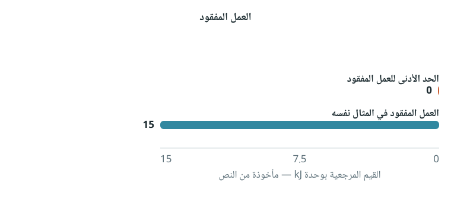

العمل المفقود
Lost Work
الطاقة التي تصير غير متاحة للعمل بسبب اللاعكوسية، وتساوي حرارة المحيط المطلقة مضروبة في الإنتروبيا المولَّدة: W_lost = T_σ·S_G.
العمل المفقود هو ما كان يمكن الحصول عليه من عمل لو جرت العملية عكوسية، ثم نقص بسبب اللاعكوسية. يعطيه Smith وآخرون بالعلاقة W_lost = T_σ·S_G حيث T_σ حرارة المحيط المطلقة وS_G الإنتروبيا المولَّدة؛ ومع S_G ≥ 0 يكون W_lost ≥ 0. والمساواة بالصفر تتحقق في العملية العكوسة تماماً، والمتراجحة في كل عملية حقيقية. والعلاقة ليست تعريفاً اصطلاحياً بل حصيلة موازنة إنتروبية: الإنتروبيا المولَّدة لا تختفي، بل تُطرح في المحيط عند حرارته، فالطاقة المصاحبة لها تصير غير قابلة للتحويل إلى عمل. ويربط Nag هذا المقدار بنظرية Gouy–Stodola التي تجعل معدل فقد الإكسيرجي متناسباً مع معدل توليد الإنتروبيا، وهي الجسر بين القانون الثاني والتصميم الهندسي.
كيف تعمل الظاهرة؟
الآلية موازنة إنتروبية لا موازنة طاقة: الطاقة الأولى محفوظة في العمليتين، لكن العكوسية تشترط أن يكون مجموع تغيّر الإنتروبيا للنظام والمحيط صفراً، وأي احتكاك أو انتقال حرارة عبر فرق محدود يولّد إنتروبيا موجبة لا يمكن إرجاعها. والإنتروبيا المولَّدة تُطرح في المحيط عند حرارته T_σ، فتزيد إنتروبيا المحيط بمقدار S_G، والطاقة المصاحبة لهذه الزيادة هي T_σ·S_G، وهي بالضبط العمل الذي كان سيُنتج لو لم تُولَّد. لذلك يتساوى حساب العمل المفقود من فرق الشغل مع حسابه من الإنتروبيا، وهذا التطابق هو ما يجعله مقياساً محسوباً لا تقديراً.
العلاقة بالأرقام
الحساب من جهتين ثم المقارنة. المعطيات: T_H = 600 K، T_C = T_σ = 300 K، Q_H = 100 kJ، W = 35 kJ. أولاً الكفاءة العكوسية: η_rev = 1 − T_C/T_H = 1 − 300/600 = 0.50، ومنه W_rev = 0.50 × 100 = 50 kJ. ثانياً الحرارة المطروحة: Q_C = 100 − 35 = 65 kJ. ثالثاً توليد الإنتروبيا: S_G = −Q_H/T_H + Q_C/T_C = −100/600 + 65/300 = −0.1667 + 0.2167 = 0.05 kJ/K. رابعاً العمل المفقود: W_lost = 300 × 0.05 = 15 kJ، ويطابق W_rev − W = 50 − 35 = 15 kJ. وفي الاحتكاك الهيدروليكي: تصريف 0.002 m³/s عبر انخفاض ضغط 50 kPa يفقد قدرة V̇Δp = 100 W، ويقابل توليداً 100/300 = 0.333 W/K.
مفاهيم متقاربة
الفرق الأول عن «الطاقة المفقودة»: الطاقة لا تفنى، والمفقود هو قابليتها للعمل فقط؛ فحرارة مطروحة إلى المحيط عند 300 K تحمل طاقة كبيرة وقابلية عمل قريبة من الصفر. الثاني عن الإكسيرجي: الإكسيرجي أقصى شغل متاح بين حالة النظام وحالة الميتة، والعمل المفقود هو ما ضاع من هذا المتاح في العملية نفسها. الثالث عن توليد الإنتروبيا: S_G مقياس إنتروبي لا طاقة، والتحويل يحتاج ضرباً في حرارة المحيط؛ فمقارنة S_G بين عمليتين لا تقول أيهما أفدح فقداً إلا بعد الضرب عند الحرارة المرجعية نفسها. الرابع عن اللاعكوسية الداخلية والخارجية: انتقال الحرارة عبر فرق محدود يولّد إنتروبيا خارج حدود النظام، ويُحسب في العمل المفقود ما دام المحيط هو المستقبل النهائي.
حدود التطبيق
العلاقة تفقد وضوحها إذا كانت حرارة المحيط غير محددة أو متغيّرة: عند طرح الحرارة إلى مائع متغيّر الحرارة لا توجد قيمة واحدة لـT_σ، ويلزم تكامل dS على مسار الطرح. وكذلك لا تُستخدم بلا تحديد صريح لحدود النظام، لأن S_G نفسها تعتمد على الحدود المختارة: ما هو داخل النظام وما هو في المحيط. وأخيراً W_lost ليس بديلاً عن تحليل إكسيرجي كامل: هو يقيس ما فُقد بسبب اللاعكوسية في عملية، لا ما تبقّى متاحاً بعدها، فاستعماله لترتيب بدائل تصميمية بلا حساب الإكسيرجي المتاح يضلّل.

| الكمية | القيمة | المصدر |
|---|---|---|
| الحد الأدنى للعمل المفقود | 0 kJ | [1] |
| الإنتروبيا المولَّدة في مثال المحرك 600/300 K | 0.050 kJ/K | [1] |
| العمل المفقود في المثال نفسه | 15 kJ | [1] |
| فقد القدرة في انخفاض ضغط 50 kPa بتصريف 0.002 m³/s | 100 واط | [1] |
المصادر
استشهد بهذا المصطلح
الصيغتان مبنيتان من بيانات الصفحة نفسها: العنوان والتاريخ ورابط النسخة المنشورة.
العمل المفقود — Lost Work. (2026). ديوان المعرفة — انفراد. https://infiradev.com/diwan/terms/term-lost-work.html
@misc{term-lost-work2026,
title = {العمل المفقود},
titleaddon = {Lost Work},
howpublished = {{ديوان المعرفة — انفراد} — مرجع علمي عربي},
year = {2026},
url = {https://infiradev.com/diwan/terms/term-lost-work.html},
urldate = {2026-11-26},
note = {مراجعة علمية: hermes — مراجعة آلية بالتكليف 2026-11-26}
}
راجعه: hermes — مراجعة آلية بالتكليف 2026-11-26 · 2026-11-26 · آخر تحديث 2026-11-26